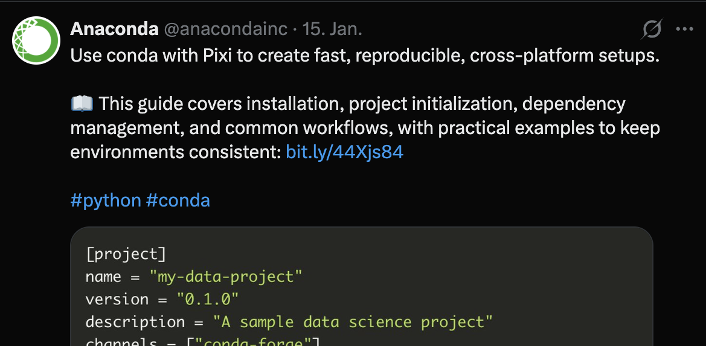
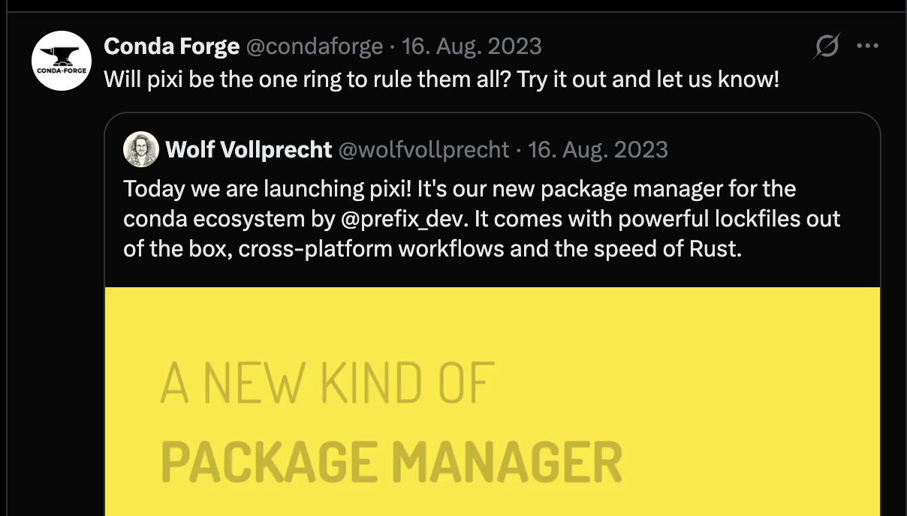
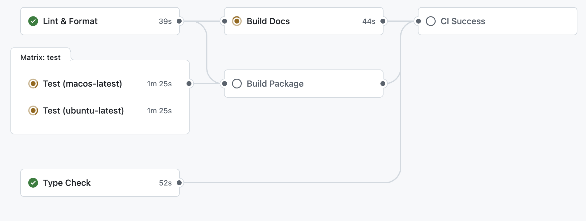
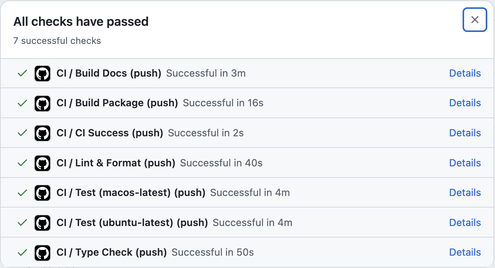

flowchart LR
A[Branch] --> B[Code]
B --> C[Test]
C --> D[Commit]
D --> E[Push]
E --> F[PR]
F --> G[Review]
G --> H[Merge]
H --> AModern Python for Computational Biology
⬢ The Hive Protocol ⬢
CBG Retreat 2026
2026-01-22
What if every project started with tests, docs, and CI already working?
Fork this repo. Delete the TODO. Ship research software.
⬢ HIVE-PROTOCOL ⬢
The Problem

The recursive refactor trap
- “Just one quick fix…”
- No tests → afraid to change code
- No types → bugs hide until runtime
- No CI → “works on my machine”
- No structure → rewrite from scratch
The real cost
- Papers with broken code
- Results that can’t be reproduced
- Time lost to environment hell
Foundations
The 2026 Landscape
The Python ecosystem has matured. Use the modern tools.
| Function | |
|---|---|
| Package Mgmt | pip + requirements.txt |
| Code Quality | Black + flake8 + isort |
| Data Processing | pandas for everything |
| Literate Prog. | Jupyter notebooks |
| Testing | Manual test cases |
| Config Validation | Manual checks |
| The Modern Way | |
|---|---|
| → | pixi |
| → | Ruff |
| → | Polars |
| → | Quarto |
| → | pytest + Hypothesis |
| → | Pydantic |
All included in this template!
Our Toolkit
Pixi
 Ruff
Ruff
 Polars
Polars
 Quarto
Quarto
 Pytest
Pytest
 Hypothesis
Hypothesis
 Pydantic
Pydantic
 mypy
mypy
Pyright
 Interrogate
Interrogate
Why Pixi?
Bioinformatics needs conda
- samtools, bedtools, bcftools
- Many tools are conda-only
- PyPI alone isn’t enough
The alternatives
| Tool | Conda | PyPI | Speed | Lock files |
|---|---|---|---|---|
| conda | Yes | Limited | Slow | No |
| poetry | No | Yes | Medium | Yes |
| uv | No | Yes | Fast | Yes |
| pixi | Yes | Yes | Fast | Yes |
Pixi: Community Support



Endorsed by conda-forge and Anaconda — the future of conda environments.
Note
Free for research: Pixi is BSD3-licensed. No fees, no restrictions on academic use.
Why Ruff?
One tool replaces many
- Black (formatting)
- flake8 (linting)
- isort (import sorting)
- pyupgrade (syntax updates)
- And 700+ lint rules
Written in Rust
30-100x faster than Python equivalents
Repository Structure
hive-protocol/
├── src/hive_protocol/ # Source code (src layout)
│ ├── inference/ # Kalman filter + diagnostics
│ └── data/ # Data simulation
├── tests/ # pytest + Hypothesis tests
├── notebooks/ # Quarto tutorials
├── workflow/ # Snakemake pipeline
├── docs/ # Workshop materials
├── pyproject.toml # Single source of truth
└── pixi.toml # Environment specificationKey principle: pyproject.toml is the single source of truth for your project.
Hands-on: Setup
Goal: Everyone has a working environment.
Example Content: Bayesian Kalman Filter
The Example: State-Space Model
The problem
Estimate hidden states from noisy observations using PyMC.
This is example content—replace with your domain logic.
Always check diagnostics
- R-hat < 1.01: Chains converged
- ESS > 400: Enough samples
- Divergences = 0: No issues
“If you don’t check diagnostics, you don’t have results.”
Testing & Type Safety
Type Checking: mypy vs Pyright
Why type hints?
Catch bugs before runtime. Document intent.
Pyright: Fast Local Feedback
Speed matters
- Written in TypeScript
- Checks large codebases in seconds
- Excellent VS Code integration (Pylance)
Strict mode available
Catches more issues but requires more annotations.
mypy: Stable CI Checks
Why mypy for CI?
- Battle-tested, stable
- Extensive plugin ecosystem
- Well-documented error messages
- Industry standard
Configuration in pyproject.toml
Why Pydantic?
The problem
# Manual validation is tedious and error-prone
def run_experiment(config: dict) -> None:
if "n_samples" not in config:
raise ValueError("Missing n_samples")
if not isinstance(config["n_samples"], int):
raise TypeError("n_samples must be int")
if config["n_samples"] < 1:
raise ValueError("n_samples must be >= 1")
# ... and so on for every fieldPydantic solution
Automatic: Type coercion, validation, serialization
Pydantic for Scientific Configs
Define once, validate everywhere
from pydantic import BaseModel, Field
from pathlib import Path
class KalmanConfig(BaseModel):
"""Configuration for Kalman filter."""
# Simulation parameters
n_steps: int = Field(ge=10, le=10000)
process_noise: float = Field(gt=0, le=10)
measurement_noise: float = Field(gt=0, le=10)
# Inference parameters
n_samples: int = Field(ge=100, default=1000)
n_tune: int = Field(ge=50, default=500)Pydantic + Type Checkers
from pydantic import BaseModel, Field
import numpy as np
from numpy.typing import NDArray
class SimulationResult(BaseModel):
"""Results from a simulation run."""
model_config = {"arbitrary_types_allowed": True}
true_states: NDArray[np.float64]
observations: NDArray[np.float64]
config: KalmanConfig
@property
def n_steps(self) -> int:
return len(self.true_states)Key insight: Type hints + Pydantic = defense in depth
- mypy/Pyright catch type errors at development time
- Pydantic catches validation errors at runtime
Hypothesis: Property-Based Testing
The problem with example-based tests
You test what you think of. Bugs hide in what you don’t.
Hypothesis generates test cases
from hypothesis import given, strategies as st
@given(st.lists(st.integers()))
def test_sort_properties(xs):
result = sort(xs)
# Property: length preserved
assert len(result) == len(xs)
# Property: sorted order
assert all(a <= b for a, b in zip(result, result[1:]))
# Property: same elements
assert sorted(xs) == resultHypothesis Strategies
Built-in strategies
NumPy arrays
Hypothesis in Practice
from hypothesis import given, strategies as st, settings
import numpy as np
@given(
n_steps=st.integers(min_value=10, max_value=100),
process_noise=st.floats(min_value=0.01, max_value=1.0),
)
@settings(max_examples=50) # Limit for slow tests
def test_kalman_filter_properties(n_steps, process_noise):
"""Test that Kalman filter has expected properties."""
states, obs = simulate_noisy_trajectory(
n_steps=n_steps,
process_noise=process_noise,
seed=42,
)
# Property: observations should be noisier than states
assert np.std(obs) >= np.std(states) * 0.5
# Property: lengths match
assert len(states) == len(obs) == n_stepsKey insight: Test properties that must always hold, not specific values.
Workflows & Quality
Git for Researchers
Feature branches
Good commit messages
Bad:
fix
update
changesGood:
fix: correct off-by-one in filter
feat: add bandpass filter option
docs: update installation guidePre-commit Hooks
What happens:
- You run
git commit - Pre-commit runs Ruff and mypy
- If issues found → commit blocked, auto-fixed
- You commit again → clean code only
GitHub Actions CI
Every push triggers automated testing.
Badge on README = instant trust.
CI: Resource-Efficient Testing

Parallel jobs with smart dependencies — fast feedback, minimal compute.
CI: This is Trust

Add features. Don’t worry about breaking something.
When CI passes, you know it works.
Quality Isn’t Optional. It’s Automated.
Test Coverage (pytest-cov)
Name Cover
-------------------------------
__init__.py 100%
data/simulate.py 100%
inference/diagnostics.py 93%
inference/kalman.py 100%
-------------------------------
TOTAL 97%
✓ Required coverage 70% reachedDocstring Coverage (interrogate)
Name Cover%
-------------------------------
__init__.py 100%
data/simulate.py 100%
inference/diagnostics.py 100%
inference/kalman.py 100%
-------------------------------
TOTAL 94.4%
✓ PASSED (minimum: 80%)Low friction, high standards. Runs automatically on every push.
The Development Loop
- Create feature branch
- Write code + tests
- Run
pixi run check - Commit (pre-commit runs)
- Push and create PR
- CI runs, review, merge
Fork and Customize
Steps
- Fork this repository
- Rename
hive_protocol→ your project - Update
pyproject.tomlmetadata - Replace the Kalman filter with your code
- Keep testing + CI patterns
What to keep
src/layoutpyproject.tomlstructure- Test organization
- CI/CD workflows
- Pre-commit configuration
- Quarto notebooks pattern
Hands-on: Make a Change
Hands-On Demos
Demo: Ruff Auto-Fix
Before
Commands
Demo: Quarto Live Edit
Start the preview server
What you see
- Live reload on save
- Code + output rendered together
- Clean markdown source (git-friendly!)
Demo: Pydantic Validation
from pydantic import BaseModel, Field, ValidationError
class ExperimentConfig(BaseModel):
n_samples: int = Field(ge=1, le=10000)
learning_rate: float = Field(gt=0, lt=1)
# Valid config
config = ExperimentConfig(n_samples=1000, learning_rate=0.01)
print(config) # n_samples=1000 learning_rate=0.01
# Invalid config - clear error message!
try:
bad = ExperimentConfig(n_samples=-5, learning_rate=2.0)
except ValidationError as e:
print(e)
# n_samples: Input should be >= 1
# learning_rate: Input should be < 1Your experiments fail fast with clear messages.
Demo: Hypothesis Bug Finding
from hypothesis import given, strategies as st
def remove_duplicates(items: list[int]) -> list[int]:
"""Remove duplicates while preserving order."""
seen = set()
return [x for x in items if x not in seen and not seen.add(x)]
@given(st.lists(st.integers()))
def test_remove_duplicates(items):
result = remove_duplicates(items)
# Property: no duplicates
assert len(result) == len(set(result))
# Property: all elements preserved
assert set(result) == set(items)
# Property: order preserved
for i, x in enumerate(result):
original_idx = items.index(x)
assert all(items.index(y) > original_idx for y in result[i+1:] if y != x)Run: pixi run pytest -v — Hypothesis generates hundreds of test cases automatically.
Summary
What We Covered
| Topic | Key Takeaway |
|---|---|
| Foundations | Pixi + Ruff for 10-100x speedup |
| Type Safety | Pyright for local dev, mypy for CI |
| Configuration | Pydantic validates your experiment parameters |
| Testing | Hypothesis finds bugs you didn’t think of |
| Coverage | pytest-cov + interrogate automate quality |
| Workflows | CI/CD catches issues before they reach main |
Resources
- Repository: github.com/cbg-ethz/hive-protocol
- Pixi: pixi.sh
- Ruff: docs.astral.sh/ruff
- Pydantic: docs.pydantic.dev
- Hypothesis: hypothesis.readthedocs.io
- pytest-cov: pytest-cov.readthedocs.io
- Interrogate: interrogate.readthedocs.io
Next Steps
- Today: Fork the repository
- This week: Adapt it to your project
- Ongoing: Share with your lab
⬢ Hive Protocol ⬢ CBG Retreat 2026 | ETH Zurich